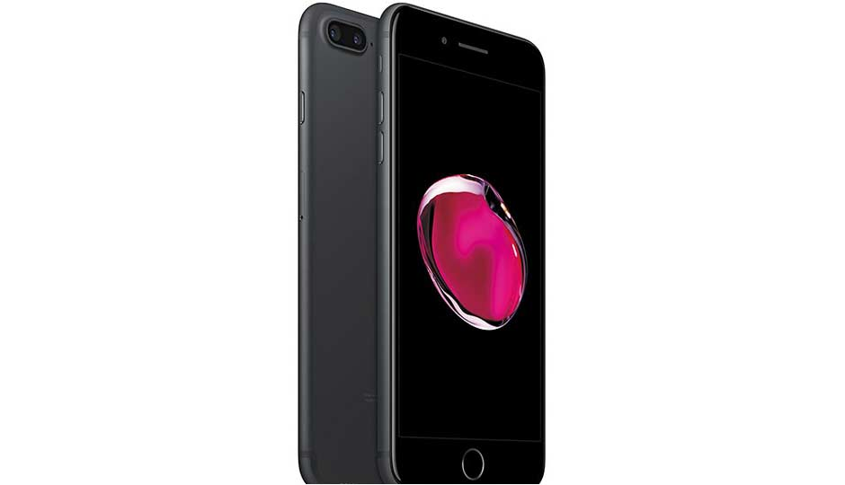

2.Apple iPhone 7

Specs: Display: 4.7-inch, 750p SoC: Apple A10 Fusion RAM: 2GB Storage: 32/128/256GB Camera: 12MP, 7MP Battery: 1960mAh OS: iOS 10.1
As technology moves forward and smartphones are become more powerful, their ability to do more has increased. In recent times, flagship smartphones are featuring almost 6GB of DDR4 RAM which more than the RAM available on a normal laptop. While you may be using a 1080p Television at home, the screen resolution on the best smartphones have moved onto 2K. Not just that, the camera quality is coming nearer to DSLRs with each new smartphone. However, all these phone do come at premium price. So, here are the top 10 best smartphones you can buy in India. Our list of the Best Phones to buy in India in for January 2017, offers the right mix of performance and features.
The Top 5 Mobile Phones of 2017
1.Apple iPhone 7 plus

Specs: Display: 5.5-inch, 1080p SoC: Apple A10 Fusion RAM: 3GB Storage: 32/128/256GB Camera: 12MP + 12MP, 7MP Battery: 2900mAh OS: iOS 10.1
2.Apple iPhone 7
Specs: Display: 4.7-inch, 750p SoC: Apple A10 Fusion RAM: 2GB Storage: 32/128/256GB Camera: 12MP, 7MP Battery: 1960mAh OS: iOS 10.1
3. Google Pixel XL

Specs: Display: 5.5-inch, 1440p SoC: Qualcomm Snapdragon 821 RAM: 4GB Storage: 32/128GB Camera: 12.3MP, 8MP Battery: 3450mAh OS: Android 7.1
4. Samsung Galaxy S7 Edge
Specs: Display: 5.5-inch, 1440p SoC: Exynos 8890 RAM: 4GB Storage: 32GB Camera: 12MP, 5MP Battery: 3600mAh OS: Android 6.0
5.Apple iPhone 6s

Specs: Display: 5.5-inch, 1080p SoC: Apple A10 Fusion RAM: 3GB Storage: 32/128/256GB Camera: 12MP + 12MP, 7MP Battery: 2900mAh OS: iOS 10.1